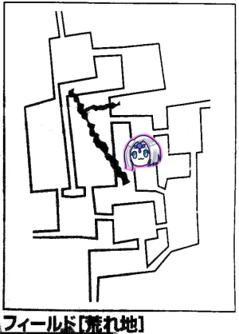
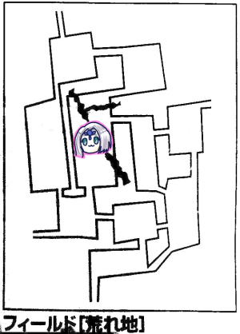

第6回エターナルはーじまーるよー
前回は月の雫の捜索イベントの終盤で時間切れになったんでしたね！
あとは時間内に目的地に辿り着いて目的のものを手に入れるだけ。
ボスも倒しているし(かけら入りだったからボスで間違いないでしょう…)、
他に何も面倒ごとがないと思いたいですね。
さて、当日、カラオケボックスの指定された部屋番号に向かった我々を待ち受けていたのは…
くっそ狭い部屋と、机が1つだけでした。
いつもはそこそこ広い部屋と机が2つあるというのに！
単にカラオケをするだけだとしても6人はきついですよこの部屋！
机の配置からして、飲み物を目の前に置けない人も出てきます。
長机とは言え、普通にノートとか広げるなら3人で埋まる程度の机ですこれ。
この部屋でTRPGをやれと。
GMが店員と交渉しましたが失敗したようです。出目が足りなかったんや。
世は連休ど真ん中なので達成値も上がっていたんでしょう。
仕方なく、GMが追加の丸椅子に必要資料を置いて進めることになりました。
私も所持品のウィザーズトゥームとかにキャラシーを置いて進めることにしました。
「今日はこんなものを作ってきましたー！」
全員がそろったところで、ブルーローズの中の人が嬉しそうに宣言、各自に小さな袋を配り始めました。
なんと！中身は各キャラのマーカーでした！
これで戦闘が捗りますね！
何よりもかわいい！
ピーターの中の人「この袋に書いてあるPというのは」
ナナシの中の人「パイのPだな！」
ピーターの中の人「ええ…」
「Tは？」
「漬物石のT」
「Mは？」
「メイドのM」
「…じゃあNは？」
「ナイスガイのN(ﾄﾞﾔｧ)」
「ちょおまｗｗｗ」
「パイ」と「漬物石」が、そう呼称されたキャラとイニシャル同じなのはすごかったですね、これはもう運命。
GM「さて、それでは前回のクエストの続きです。依頼人のハロルドですが、死ななければセズウィック村で薬草店を開いてくれます」
「死ななければ」
「死ななければ」
「フラグ建築やめろ」

ピーターが旅人イベントを起こしました。
また仲間が増えるのか？それとも戦闘か？身構える面々。
旅人「俺は…俺は主を見てしまったんだ！主は…主の位置は…！」
GM「ピーター、1d6振ってください」
ピーター「ころころ…3です」
GM「…3でいいんですね？」
ピーター「えっ」
GM「旅人の後ろの空を見ると、そこには黒い影が！」
ピーター「えっまじ」
GM「ピーター神引き！君たちのいるエリアに主が移動してきました」
ピーター「わああんごめんなさーい！ひとまずセージチェックしますー」
GM「知名度15、弱点20でどうぞ」
ピーター「15！」
GM「コカトリスですね、データ見ていいです。なお当然ですがかけらが刺さってます」
タッシュ「こいつLV10だぞ、HPが50増えてる。…えっこいつ飛行ついてるの」
「コカトリス飛んでるのか」
「当然逃げます」
「待って、これNPCどうするの？」
GM「NPCに関しては何も記載がないですが、NPC自体にステータスが設定されているのでそれに従って判定します」
「素目で判定か」
GM「逃亡時のルールですが、判定成功失敗に関わらず逃げることはできます。但し失敗した場合『2d6+冒険者レベルの平均』のダメージを受けることになります」
「NPC死ぬのでは」
「冒頭のフラグ回収かな？」
「一度戦闘を始めて、先にNPCを逃がせないかな？」
「こいつコカトリスだよ石化持ちだよ、現状石化を治す手段はないよ」
「最初から石の人が残るというのはどうでしょう？」
タッシュ「待って」
GM「ちなみにNPCもパーティー扱いなので冒険者レベルの平均は下がって2になります」
「これは朗報」
ピーター「えっと、パラミスは撃てますか」
GM「それは戦闘が始まってしまいますね」
「なんとかNPCかばえないかな」
GM「ではNPCのダメージを1人1回肩代わりできることにしましょう」
ナナシ「それじゃ薬草師守ります」
ブルーローズ「私は詩人を」
みぞれ「多分なんとかなるな、私は行商人で」
GM「ころころ…達成値は20になります」
「クリティカル以外許されないやつ」
もちろん全員失敗しました。
GM「ふふふ、それではダメージを…あっ低っ！6ダメです」
「それは冒険者レベルの平均を足して6？」
GM「足して6です…」
各自HP処理をし、つつがなく逃げることができました。よかったですね。

ブルーローズ「残りHP16…これで冒険続けるの辛いなぁ」
「待てお前プリーストだろ、自分で回復できるだろ」
ブルーローズ「Σ(ﾟ□ﾟ；)」
タッシュ「ブルーローズ、エターナルキャンペーン始まってから何回回復唱えた？」
ピーター「私の方が回復使ってますね…範囲回復だし」
ブルーローズ「ピーターはMP温存しておいた方がいいでしょう？」
ピーター「私は魔香草で回復できますからね、そこの漬物石さんと違って」
「パイが自分への攻撃をそらしにきた」
ブルーローズ「戦闘中ほとんどMP使わないので私が回復します」
ピーター「元はと言えば私が主を呼び寄せてしまったから…ごめんなさい」
GM「全員分のマーカーもできたことだし、戦闘したかったんだよね？」
「そんな戦闘誰も望んでないから！！！」
主の行動ですが、基本的に朝イチで移動するようですよ！
但し今回のようにイベントが発生するとカジュアルに移動してしまうようです。
ほんとやめてほしい。

「これは大回りするしかなくなりましたね…東行きましょ」
ブルーローズ「ころころ…やった！イベント1です」
GM「はい、何も起きません」
「じゃ探索しましょ」
平和だった。次のエリアへ行きましょう。

GM「もう泉が湧いている時間となりました」
ナナシ「イベント振ります」
GM「いや、この時間はイベント起きないです。各自自由行動どうぞ」
全員探索失敗しました。かなしい。

タッシュ「イベント振ります。…4」
GM「荒地イベントです、追加1d6どうぞ」
タッシュ「2」
GM「ピーターはフェアリーテイマーで風を使役してるよね、それじゃ風の精霊がピーターに危険を警告します」
ピーター「えっなになに」
GM「竜巻が発生しました。全員生命抵抗判定をしてください。誰か1人でも失敗したら来たエリアに戻されます」
イベントが時間を稼いでくる！
ピーター「えっと、警告受けたんですよね。ウィンドガード撃ちたいです」
GM「分かりました。ではウィンドガードがかかった人は判定しなくていいことにしましょう」
「NPC！NPCにかけてあげて！」
タッシュ「すいませんかけてください、生命力が死ぬほど低いんです」
ブルーローズ「フロウライトって…儚い」
ピーター「それじゃNPC3人とタッシュに数拡大でウィンドガード…はい発動」
判定が必要な面々は全員成功しました。

ようやく目的のエリアに到着です。
「おっかしいなー遠回りしちゃったなー」
GM「はい、それではですね、君たちの目の前に月明りに照らされた美しい泉が見えます」
「おお」
「時間間に合ったな」
GM「その泉で美しい女性が踊っています。女性と言うか、性別が分からない感じです。セージチェックできますよ、知名度10、弱点15」
「魔物なのか」
ピーター「はい成功」
GM「ドゥナエーという妖精です。5人います」
「あっ魔物判定欄が埋まった」
＜写真あれば＞
ピーター「それじゃ妖精語で話しかけます。『やっほー』」
みぞれ「軽い」
ピーター「僕たちムーンドロップを探してるんだけど、知らない？」
ドゥナエー「知ってるよ！でも今はないんだ」
「これは振り出しに戻ったか」
ドゥナエー「ムーンドロップが欲しいなら僕たちと一緒に踊って！」
「え？」
GM「はい、一緒に踊るならバードスキルで判定してください」
「誰も持ってないよ」
「ブルーローズ取っておけばよかったじゃん」
「待って、このパーティー吟遊詩人いる！バードスキル持ってないの？」
GM「おお、そうですね、じゃ吟遊詩人はバードスキルがあるということにしましょう」
「ナイスバード」
GM「他の人も判定していいよ」
全員失敗。
GM「バード1レベルで判定します。ころころ…あれ、6」
「修正は？」
GM「修正足して6…あれ、使う？彼、人間だから」
「ここで使わずしてどこで使うと言うのか」
GM「はい、じゃあ運命変転して合計14！達成値は8なので成功しました！…おっと、達成値が12を超えているので、1日の間だけ効果判定を1回だけやり直せるようになる特殊効果がついたぞー」
「それは全員に？」
GM「いや本人だけ」
「えー…」
GM「さて、吟遊詩人がドゥナエーと共に踊るとですね、辺り一面に黄色い花が咲きました。おめでとう！これでムーンドロップ入手です！星を1つ獲得しました！」
吟遊詩人「とてもいい経験をしました、これでいい歌が書けそうです」
「だろうなｗ」
ところで今思ったんですけど、運命変転って冒険者じゃなくても使えるんですかね？ｗとても今更ですが。
「とりあえず探索しますか」
ナナシ「成功、戦いの装束ゲット、はいピーターこれ持って」
みぞれ「成功、戦いの装束ゲット、はいピーターこれ持って」
「戦いの装束、山ほど見つかるね」
「ピーターに積まれていく戦いの装束…」
みぞれ「イベント振りまーすころころ、4です」
GM「荒地イベントです。もう一度1d6どうぞ」
みぞれ「ころころ…2です」
GM「竜巻が発生しました」
「またか」
GM「よく見るとレッドキャップが竜巻に吸い上げられています」
「レッドキャップネイド」
「B級映画かな？」
「これはもう素直に戻されましょう」
ピーター「エリア戻されてまた戻ってきました。イベント振りまーす…5、あっこれ戦闘！？」
GM「ふむ…これは主が移動しますね、ピーター1d6振ってください」
ピーター「えええええ」
GM「先に言っとくよ、5が出たらドンピシャでそこのエリアに来る」
ピーター「プレッシャーかけるのやめてください！…2です！セーフ！」
「で、これ主どこに行ったんだろう」
「巣に移動してたら嫌だよね」
「仕方ないから巣に行きましょ」
「主はいますか！！！」
GM「主は…いません」
「よっしゃー」

ブルーローズ「やっとここまで来ましたわね！ころころ…あっ6」
GM「これは戦闘ですね」
ブルーローズ「種別は2です」
GM「インプが1体と1m程度の粘土でできた人形の魔物が2体です。こいつ判定成功してなかったんだっけ」
「クレイゴーレム(仮)ですね」
ピーター「インプ弱点抜きました！クレイゴーレム(仮)は…わかんないです」
GM「おっと間違えた、インプは2体だった。それで◯◯パペットがー」
「おい今なんとかパペットって言ったぞ」
「待って、インプ神聖魔法使えるんだけどやばくない」
ナナシ「先制取りました」
ピーター「攻撃力上げるよー」
ナナシ「ブラントウェポン？」
「ナナシ攻撃力下げられたいの？ｗ」
ピーター「ボーパルウェポンですね、ブルーローズに」
ナナシ「俺には？」
ピーター「順番待って？えっと、ウィンドカッターを数拡大で撃ちます…ファンブルー」
「ピーター、数拡大は鬼門なのでは」
「伝説のファンブラー」
タッシュ「リープスラッシュを…どうしようかなー」
ピーター「どうせ次村だから使い切っちゃえー」
みぞれ「それでファンブルするんですよね」
タッシュ「確実化は…いいかー、インプ2体に撃ちます」
「フラグ立てるのやめて」
タッシュ「発動しました」
GM「抵抗しました。ダメージ半額と斬撃弱点が乗ります」
ナナシ「挑発攻撃をクレイゴーレムに」
GM「くらいましたが硬いです、半分ぐらい防ぎました」
「半分！？うそやん今14点ダメージ行ったぞ」
ブルーローズ「魔力撃ハードノッカーで」
GM「当たりました」
ブルーローズ「18点どうぞー」
GM「18…バケモノだなー」
ブルーローズ「追加攻撃しまーす！クリティカルで23点！」
GM「力でねじ伏せられた…」
みぞれ「インプ1匹潰したい。ソリバレをインプに」
GM「避けました」
GM「それじゃこっちのターン。クレイゴーレムがナナシに攻撃」
ナナシ「ひらり」
GM「インプはどうしようかなー」
タッシュ「うさぎかわいい」←ピーターのマーカーのこと
「ちょっと、インプが何かしようとしてるから注目してあげてｗ」
GM「よし、フィアーを前衛にかけます」
ブルーローズ「抵抗しました」
ナナシ「抵抗しました」
GM「むむ、じゃもう1匹は今度は後衛にフィアー。あのね、何がやりたいかって言うとね、主が今隣のエリアにいるのよ。でフィアーがかかったらランダムで隣のエリアのどこかに逃げ出すから…」
「うわえげつない」
しかし後衛もなんとか抵抗！
ピーター「パラミスを3体にかけます！」
GM「全員抵抗失敗しました、回避-1されます」
ブルーローズ「魔力撃ハードノッカーで土くれ殴りまーす。17点！追撃いきまーす」
GM「これは回避したかな？あっパラミス入ってギリギリ避けられない」
ブルーローズ「クリティカル！26点入ります」
GM「そのダメージ頭おかしいだろ死んだわ」
ナナシ「挑発攻撃をインプに。命中クリティカル！」
GM「はい避けられない」
ナナシ「ダメージ6点」
みぞれ「1点残った…」
タッシュ「さっさと片付けよう、リープスラッシュをインプ2体に」
GM「はい抵抗、でも斬撃ボーナスついてしにましたー」
ようやく村に帰還しました！
吟遊詩人から300ガメルをもらった！
村の名声値が上がった！
星を獲得した！
行商人から200ガメルもらった！
村の商業値が上がった！
星を獲得した！
「行商人ケチだな、吟遊詩人より金払いが悪い」
ハロルドから1人1000ガメルをもらった！
村の名声値が5上がった！
星を2つ獲得した！
おめでとう！セズウィック村が発展した！
というか先日遺跡を売った時点で発展済です！
イベントが発生するのに冒険者達が村にいなくて村長待ちぼうけの巻。
GM「ちなみに商業値15でハロルドの店が建ちます。名声値15になるとライダーギルドが建ちます」
「夢ひろがりんぐ」
GM「さて、経験点の処理をしましょう。まずモンスターによる経験点が740点」
「多くない？」
GM「ファンブルした人は経験点に変換してくださいねー」
ピーター＆タッシュ「こないだのファンブルは50点ぐらい欲しいよね」
「あれは記憶に残るファンブルでしたね」
「メモリアルファンブラーズ」
GM「あと星の数×200点が入ります。星が12個だから2400点ですね。ではここで昼休み兼成長処理の時間を取りまーす」
各自、食事をしたり成長処理をしたり。
GMここでバード技能をだれか持ってると新しいミッションが発生しますがどうしますか」
ブルーローズ「それじゃさっき泉でナナシにバード判定で負けた腹いせに取ります。言語が習得できるけど、ドラゴン語と魔神語どっちがロマンあるかな」
ナナシ「ドラゴン」
ピーター「ドラゴン」
ブルーローズ「両側からドラゴンって言われたらドラゴンにするしかないじゃない！」
GM「さて、君たちが今受けられる依頼ですが、まず討伐依頼が『荒地の魔物の討伐』『渓谷の魔物の討伐』『大地の魔物の討伐』です。…依頼用のカードせっかく作ってきたのに忘れてきたわ…」
かなしい。
GM「あとは名声値を上げると発生するクエストがあるので頑張ってください」
とりあえず村が発展したことで発生したイベントをこなします。村長のところへれっつごー。
村長「おお、2ヶ月ぶりじゃのう！」
「メタ発言ｗ」
村長「君たちから預かった石版の解読が進んだんで、伝えようと思ってね」
石版のこととかかなり忘れていた気がしますねｗ
エターナルへ行くための方法が書いてあるとかでしたっけ？
この石版を手に入れた時のリプレイ書いてないから…
・エターナルへ行くためには刻印を集めなければならない
・各刻印は5つの王国にある
・王国には守りの魔法がかかっていて通常見ることができない
・守りの魔法は魔力の呪歌で解除することができる
・石版にはその魔曲の1曲『富めるオボロンへの曲』が記されていた
・魔曲を演奏するには楽譜、楽器、バード技能が必要
・隠された王国へ行くにはその王国があるエリアで演奏する必要がある
・達成値は9、演奏1回につきMP5を消費
・守りの魔法を解除して中にいられるのは6時間
ブルーローズ「楽器…私が聖印用に持ってる楽器は使えますか？」
GM「そうですね、本来役割が別のアイテムになるので追加で買ってもらうことになるんですが、カスタマイズするという形で追加料金で使えるようになる、ということにしましょう」
ブルーローズ「やった！」
みぞれ「これ、時間切れになっても中にいたらどうなるんだろ？」
GM「おそらく外に弾き出されるとは思われますが、実際どうなるかはわかりません。次元の狭間に飛ばされたりするかもしれません」
「壁の中にいたりとか」
「気づいたらみんなくっついて1つの生物になってたりとか」
GM「そのオボロンですが、5つの中では一番大きい都だったようですね。石版には『蒼き大蛇が鎌首を上げた場所』にあると記されています」
ブルーローズ「蒼き大蛇…どこかに滝なかったっけ？」
村長「おお、私も滝じゃないかと思っていました！おそらくその滝は渓谷にあるものと思われます！」
GM「というわけで渓谷フィールドの場所を決めます」
ブルーローズ「はーい、ころころ…あっ遠い位置に」
「ところでみんな保存食は大丈夫？」
みぞれ「あ、買わなきゃ…1週間分って7個でいいんだよね」
ナナシ「1週間は…5営業日だから…」
タッシュ「お前は営業日じゃなかったらメシを食わんのかｗ」
「そう言えば建物とか建てなくていいの？」
「建築ポイント14あるよ、なんか建てよう」
「ザイア神殿建てよう、さっきのコカトリスの石化とかあるし、回復施設がないとまじでやばい」
「あんまりお世話になりたくないけど牧場(生死判定振り直し)も建てよう」
「あとは…冒険者の私塾かな、探索判定振り直し」
「あー(蘇る記念すべき第1回目のセッションラスト)」
一通り村での処理が終わりました。
協議の結果、荒地で見つけた遺跡へ行くことになりました。
何度かこのキャンペーンをやったことがあるGMも、遺跡は初めてのようです。
ここから割とずっとるるぶとにらめっこしていたような気がしますｗ
「それじゃ出発しますかー」
GM「じゃピーター主の居場所振って」
ピーター「ええ…1」
GM「ふむなるほど」
ブルーローズ「イベント振りまーすころころ…あっ5」
GM「戦闘ですね」
ブルーローズ「種別も5です…」
GM「成長処理で平均レベル上がったから敵が強くなりますよー！えーと、屈強な戦士の形をしたガス状の黒い怪物×2、巨大なかぎ爪を持つ細身の生物が1体」
ピーター「魔物知識判定しまーす」
GM「かぎ爪の方はスポーンLV4です」
「うわこいつ2回攻撃だ」
GM「ガス状の怪物はガストナイトLV4です、こちらは弱点抜いてますね、打撃+2となります」
今見たらスポーンってこないだの単発シナリオの時のアザービーストと同じレベルの魔神なんですねぇ。
ナナシ「先制振りまーす、うおおあぶねーぴったり」
「そろそろスカウト上げるべきでは？」
ナナシ「スカウトもう4なんですよ」
「ダイス目を上げるべきでは？」
ピーター「ボーパルウェポンをブルーローズに使います。で新技のファイアブラストを使います」
GM「全員抵抗しましたー」
タッシュ「試しに新技ライトニングを…使おうと思ったけど、これ貫通かー、前衛に被害が及んでしまうな、次回辺り魔術師なのに前衛に立ってるかもしれん。えーどうしようかな、前衛2人にファイアウェポンをかけます。ころころ…はい発動」
ナナシ「えっすごい発動した」
タッシュ「これからナナシーさんにファイアボルト飛ばそうかな？」
ナナシ「俺全力移動72mで逃げるよ」
ブルーローズ「新技使うよ！ドラゴンテイル使うので尻尾が生えます！移動して尻尾を使って魔力撃、スポーンをスポーンします…19！追撃します！21！」
GM「ギリ生きてる」
みぞれ「あと1点ですね」
ナナシ「みぞれ…こいつ殺せる？」
みぞれ「当たればね、とりあえず撃ちます」
GM「当たった」
みぞれ「これ計算する必要ないよね？スポーン撃破」
ナナシ「キャッツアイ使います、当たったー15点」
↑とテキスト入力してあるのに戦闘ダメージ計算は14点になってるの、何やってるんですかね私？？？
敵のターン、ガストナイトの攻撃がブルーローズにヒット、5点ダメージ。
ブルーローズ「無傷な方のガストナイト殴ります」
GM「クリティカル回避」
ブルーローズ「えええーーー追撃しまーす、うわ弱い」
GM「当たりました」
ブルーローズ「19点ダメージで！」
ナナシ「ブルーローズが削った方狙いまーす…おっクリティカル」
GM「それは避けられないわ」
ナナシ「ダメージは…1ゾロ…」
みぞれ「同じく削られてる方にソリバレ撃ちます、はい撃破ー」
ガストナイト残り1匹の攻撃がブルーローズに命中、13点ダメージ。
ブルーローズ「あっ死んだ」
「えっ」
ブルーローズ「生命抵抗判定には成功しましたよ！」
うちのリーダーすぐ倒れるｗ
ナナシ「残ったやつ狙います」
GM「クリティカル回避」
ナナシ「みんななんかのリソース食うなら俺が避けるから遊んでていいよ」
これは後ろでトランプしてる流れでしょうか？ｗ
次のターンで削りきれませんでしたが、その次のターンでようやく撃破。
宣言通り、相手の攻撃はきっちり避けました。この辺はさすがです。
みぞれ「それじゃマスターの応急手当をします。もうこの作業も慣れました…」
ピーター「生き返ったブルーローズにヒールウォーターを…あ、クリティカル」
ブルーローズ「うさちゃんそんなに私のことを…！」
みぞれ「こないだは飲めない水を作ってましたけどねｗ」
「それじゃモンスター剥ぎましょう」
ブルーローズ「私を倒したガストナイト剥ぎます」
タッシュ「ガストは12出すといいものもらえるよ」
ブルーローズ「おおおおおお12！」
GM「はい、高密度の魔石です、700ガメルになります」
ブルーローズ「やったーーー！！！」
遺跡のあるエリアへ移動。
「主は？」
GM「いません」
ナナシ「イベント振りまーす、4」
GM「荒地イベントかな、もう1d6どうぞ」
ナナシ「4」
GM「旅人が魔物に襲われている！」
「デジャヴ」
GM「魔物の種類決めます、1d6どうぞ」
ナナシ「5」
GM「屈強な戦士の姿を…これさっきと同じ組み合わせだな」
ピーター「弱点は…抜けませんねこれ」
先制取りました。
ピーター「数拡大で全員にファイアーボール撃ちまーす」
GM「う、全員抵抗失敗」
ピーター「それではダメージを…あ、10！あーでも魔法はクリティカルしないから」
「え、するよ」
ピーター「まじで」
「おいフェアリーテイマー」
「このセッション半年前からやってるんだけど大丈夫？」
GM「抵抗に成功されなければクリティカルします」
うさぎ、クリティカルを覚える。
「あっそうだ、旅人さんは危ないので下がっててください！」
タッシュ「バランスウェポンをガストナイト2体と前衛2人にかけます…はい発動」
ブルーローズ「スポーンをすっぽーんしまーす…ハードノッカー魔力撃で、あっ命中低いなー」
GM「回避失敗」
ブルーローズ「16てーん！追撃ー」
GM「それは回避」
みぞれ「えーと、キャッツアイ入れてソリバレ撃ちます」
GM「当たりました」
みぞれ「9点ダメージです！…あっこれ1残り」
ナナシ「これは潰す以外ない、スポーンに攻撃します、はい撃破ー」
敵のターン、ガストナイトは前衛2人が回避。
ブルーローズ「ハードノッカーで攻撃します！18点ダメージ！」
みぞれ「1足りない」
ブルーローズ「追撃！当たった！」
GM「ファンブルしなければ倒れますねこれ」
ブルーローズ「クリティカル」
「残り1点の相手に鬼か」
ナナシ「え、ちょっとどれだけダメージ出るかやってみて」
ブルーローズ「あっまたクリティカル、えーと、全部足したら32点」
酷いオーバキルだった。
ナナシ「残った奴に挑発攻撃」
GM「当たりました」
みぞれ「じゃあ攻撃…」
ナナシ「リソース食うからいいよ、あとは俺がやる」
みぞれ「えっじゃあ最初のキャッツアイじゃなくてタゲサでよかったのではｗ」
ラストガストナイトの攻撃はナナシがきっちり回避し、ブルーローズがとどめをさしました。
助けた旅人は星をくれました。
GM「ちなみに星の精算はミッション達成時で、遺跡攻略はミッション達成に含まれないので注意してください」
タッシュ「…よし、隊列変更、前衛に出ます」
ついにタッシュ先生が前衛に！
遺跡探索概要
GM「遺跡の深度は最初に2d6×2で決定します。奥に進む行動を選択すると1d6分進み、一番奥のボスを倒せば終了となります。なお暗いので行為判定にペナルティが付きます」
ピーター「灯りあるよー」
タッシュ「灯りいるよー」
ナナシ「暗視あるよ」
みぞれ「暗視あるよ」
ピーター「あれ、タビットって暗視持ってたっけ？」
「夜目のきくうさぎとは」
GM「行動は、進む、戻る、何もしない、を選択することができます。何もしないと1d6の456でモンスターと遭遇します。奥に進んだら探索判定をして、成功したら勧めます。失敗したら戦闘になるかもしれません」
あと「普通に進む」と「急いで進む」があって、後者の場合は2d6分進めますが、各種判定にペナが付きます。
遺跡探索～深度0
GM「では深度0から開始です」「当然先に進みます」
GM「では探索判定どうぞ」
ナナシ「成功～」
GM「ではイベントを振ってください」
タッシュ「6」
GM「戦闘ですね。植物が生えてます」
「燃やせー」
GM「あ、パーティが5人以上いる場合はワンランク上のものになるって書いてある」
「なんだってー」
GM「前兆10mほどの巨大な鱗を持つ四足の魔物、こいつは3部位モンスターで、頭と体と尻尾があります。こいつが1体。と」
「まだいるのかよ」
GM「あとはもう知ってるやつですね、スピンブロッサム、これが2体」
ピーター「セージ判定します」
GM「3部位モンスターはキプクロスLV4です。スピンブロッサムも両方弱点抜きました。どちらも火に弱いです」
タッシュ「先制取ってね？」←前衛NOW
ナナシ「ファンブル」
タッシュ「おい…」
ナナシ「俺だけが責められるのおかしくないですか？」
タッシュ「生きてたら支援します」
GM「こっちのターンから！キプロクスがテイルスイング、あっファンブル」
ナナシ「そうだ、部位持ちは後衛に行くの止められるの？」
GM「部位はモンスター1体分として扱うよ」
みぞれ「げ、それスピンブロッサム飛んでこない？」
「3人で6人止められるからギリ飛んでこない」
GM「キプロクスの頭が炎の息吹をナナシに吐きます。これ魔法扱いね」
ナナシ「う、抵抗失敗」
GM「9点受けてください」
「あれ？体は何もしてこないの？」
GM「キプロクスは頭を潰せば沈黙するけど、頭は近接が届かないようになってます。あと頭は射撃回避ついてる」
どうやら体を潰さないと頭が狙えないらしい。
スピンブロッサム2匹はGMの出目によりそれぞれブルーローズとナナシを狙い、どちらも回避でした。
タッシュ生きてた！こちらのターン！
タッシュ「炎の範囲魔法ってなんかないんだっけ」
ピーター「あるけど前衛全員巻き込みますよ」
タッシュ「うーん、範囲に誘導があればなー」
ピーター「キプロクスの頭と胴体にファイアボルト2倍がけします」
GM「抵抗失敗しました」
ピーター「それぞれ14点ダメージどうぞ」
ブルーローズ「ハードノッカー魔力撃で胴体を狙います」
GM「回避失敗です」
ブルーローズ「19点ダメージ！追撃します」
GM「あああ惜しい、ギリ回避できない」
ブルーローズ「クリティカル」
GM「胴体潰れました」
頭と尻尾が生きてて胴体が死んでるってどういうことだろうｗ
「よし頭を潰そう、迅速に潰そう」
みぞれ「エフェクトバレットあるんで弱点で撃てますよ」
「それだ、頭行け頭」
みぞれ「それじゃエフェクトバレット炎、タゲサも入れて撃ちます」
GM「クリティカル回避」
みぞれ「えぇ…」
ナナシ「普通に頭を攻撃します、9点」
タッシュ「エネボを頭に撃ちます」
GM「抵抗しました」
「うわ頭残った」
「立てた作戦が全て裏切られる」
GM「テイルスイング、前衛3人が対象になります」
ブルーローズ「回避」
ナナシ「回避」
タッシュ「うわ当たった」
GM「10点物理どうぞ」
タッシュ「4点通った」
「さすが硬い」
GM「頭が炎の息吹をタッシュに吹きます」
タッシュ「抵抗失敗…ちょ、残りHP4なんですけど」
GM「では後攻どうぞ」
ピーター「えっ」
GM「えっ？…あ、スピンブロッサム！」
「黙ってればよかったのにw」
スピンブロッサムの攻撃はブルーローズとナナシが避けました。
タッシュ「ためしに攻撃してみる、せっかくファイター技能取ったから」
ナナシ「勇者」
タッシュ「頭に攻撃します。ころころ…あれ、命中高い」
GM「ファンブルしました、最終的なダメージを2倍してください」
タッシュ「ダメージ出します、あれクリティカル…えーと13点だから2倍で26点、あれ、魔法戦士いいかもしれん」
「タッシュ、魔法戦士になる」
頭のHP残り7だったのでオーバーキルですｗキプロクス撃破！
ブルーローズ「スピンブロッサムにハードノッカー魔力撃！追撃クリティカルー！」
スピンブロッサム撃破！
ナナシ「残り1匹か、挑発攻撃」
後衛ババ抜きタイム。
ナナシが回避して、前衛がラストスピンブロッサムをタコ殴りにしました。
戦闘終了！
ブルーローズ「3部位から剥げますか？」
GM「無理です」
GM「どれだけ進んだか決めます。1d6をどうぞ」
タッシュ「3」
遺跡探索～深度3
普通に進むことにしました。探索判定は成功。
GM「魔法陣があるのが見えました。1d6振ってください」
みぞれ「4」
GM「魔法陣は白い光を放っています」
「え、普通に安全そうだけど罠だったら嫌だよね」
タッシュ「まって、僕の体力回復してくれる？」
ブルーローズ「じゃあ私が回復しまーす」
タッシュ「準備ができたところで魔法陣に足を踏み入れます」
GM「タッシュのHPとMPが2d6ずつ回復しました」
ここで全員回復できたか覚えてないんですよね…
ただ、再度ここに戻ってきても再度使用はできない仕様だったことはなんとなく覚えてます。
全く、これだからリプレイは早めに書いておくべきなんですよね←
1d6で1だったので深度は1しか進みませんでした。
遺跡探索～深度4
また普通に進みます。探索判定も成功。
GM「また魔法陣ですね」
ピーター「ころころ…6」
GM「黒い魔法陣です。魔神語わかるひといます？」
ブルーローズ「ああああああああ！」
ブルーローズ「それじゃさっき泉でナナシにバード判定で負けた腹いせに取ります。言語が習得できるけど、ドラゴン語と魔神語どっちがロマンあるかな」
ナナシ「ドラゴン」
ピーター「ドラゴン」
ブルーローズ「両側からドラゴンって言われたらドラゴンにするしかないじゃない！」
すり抜けだった。
GM「魔法陣からモンスターが登場しました。スポーン×2と、灰色の羽と細長い尻尾のついた背の低い人形の魔物が後衛にいます」
弱点は抜けませんでしたが、後衛にいるのはダスキーグレイスLV5でした。
ついにLV5が出てきてしまったか。
ナナシ「あ、先制失敗」
タッシュ「えええええ」
敵のターン、ダスキーグレイスが前衛にスパーク、全員抵抗成功。
スポーン2体が2回攻撃してきましたが全回避、2匹目の2回目の攻撃に至ってはファンブルでした。
ピーターがファイアボルトをスポーン2体に撃ちましたが抵抗されました。
ポーパルウェポンをブルーローズにかけます。
ブルーローズ「ドラゴンテイル生やしますにょろり、魔力撃のせてスポーン殴ります」
GM「当たった」
ブルーローズ「ダメージピンゾロ… 追撃します」
GM「回避」
ブルーローズ「うえええええ」
ナナシはスポーンに挑発攻撃してひきつけます。
タッシュ「ブラントウェポンを3人に…虫の知らせがきたので確実化します」
傷ついているスポーンが抵抗成功、あとは失敗。
みぞれ「キャッツアイソリバレでスポーン撃ちます」
GM「クリティカル回避」
みぞれ「えっまた？？？」
敵のターン、スポーンの攻撃は全員が回避。
ダスキーグレイスはファイアウェポンを挑発攻撃受けていない方のスポーンにかけます。
ナナシ「(ファイアウェポンの)抵抗はしますか？」
GM「しないよｗ」
ブルーローズは尻尾を強化してドラゴンテイル魔力撃をスポーンに当てます。しかし追撃は回避されました。
ピーターはファイアボルト数拡大でスポーンを狙います。
ファイアウェポンがかかってる方だけ抵抗に成功されました。
先程覚えたクリティカルが発動し、失敗した方に14点ダメージ。
ナナシは同じやつに挑発攻撃。
みぞれはまた回避されました。一発も当てられてないじゃないですかー
タッシュ「フォビドゥン・マジックを後ろの方にかけます」
GM「抵抗失敗しました」
タッシュ「では3ラウンドの間魔法が使えません」
GM「あーーーーーーーー」
敵のターン、ナナシはスポーンを回避しましたが、タッシュとブルーローズはくらいました。
ブルーローズ「はい素目どーん」←防護点ない人
GM「尻尾の攻撃が当たると絡め取りが発生します。次から命中が必中となります」
こちらのターン、ピーターがファイアボルト2倍をスポーン2体に撃ち撃破。
ブルーローズはドラゴンテイルで攻撃するも回避されます。追撃も回避。かなしい。
みぞれ「どうせ当たらないのでタッシュにヒーリングバレット撃ちます」
回復量で1ゾロが出ました。ヒーリングバレットすら当たらない！
ナナシはタッシュから尻尾をひきはがそうとするも失敗。
誰もタッシュを救えない！
タッシュ「目の前の敵(尻尾)に対してスリープを確実化でかけます。ころころ…11キタコレ、魔力18です寝ろ」
GM「寝た…」
敵のターンスルー！
ナナシは再び尻尾を剥がすのを失敗しましたが、ブルーローズが成功しました。
タッシュ「後ろにいきます」
みぞれ「転倒してるんでグルーボム撃っときます」
ピーター「パラミスかけます。成功しました」
敵はまだ寝たまま！
後はブルーローズとナナシがボコりました。終了！
ピーター「魔香草渡すから使って」
みぞれ「いつものやつですね。お、5、6だ、やる気勢」
1d6で1だったので深度は1しか進みませんでした。
ってさっきも同じこと書いたんですが…
遺跡探索～深度5
深層に行くにつれて探索難易度が上がるようです。なんとか成功。ダイス目がまたバトルだよーって言いました。
ブルーローズ「アンデッドとか出てこないなあ回復魔法使えるし」
ナナシ「土地柄だよきっと」
GM「4本足の石のモンスター×2と…あー、コンジャラーいるよね、フラービィゴーレムが1体、こいつはコンジャラーに魔物知識判定自動成功される技能を持ってます。で、4本足の石のモンスターは一見モンスターに見えないので危険感知判定どうぞ」
「成功です」
4本足はオブシディアンドッグと判明。弱点は抜けませんでした。
そしてここにきてようやく先制取れました。
ピーター「ライトニングボルト撃ちます？」
タッシュ「横薙ぎができないからやめとく」
ピーター「じゃファイアブラスト撃ちます」
タッシュ「全員に数拡大でパラライズ命中下げます、あっクリティカル」
ブルーローズ「(ファイアブラスト抵抗失敗した)HP高いわんこにハードノッカー魔力撃」
GM「無理です」
ブルーローズ「あ…もちろん移動してからです！」
GM「回避」
ブルーローズ「追撃！」
GM「命中しました」
「ブルーローズこれクリティカルすればおちるよ」
「たしかにーｗ」
ブルーローズ「クリティカル！」
「まじか」
「でも2残っちゃった」
みぞれ「じゃそいつに攻撃しまーすはい1ゾロー走ってるねー」
ナナシ「フラービィゴーレムに挑発攻撃」
GM「命中しました」
ナナシ「数字出ろ！」
「数字なら確実に出るね、うん」
フラービィゴーレムがナナシに攻撃、ぴったり回避。
ナナシ「タッシュ先生ほんと頭上がりませんわ」
犬の攻撃も2人で回避。
ピーター「前衛2人にボーパルウェポン、1点ダメージ」
ナナシ「ぐはっ…こいつ絶対パイにしてやる」
ピーター「ちがう1点ダメージ追加って意味！」
ブルーローズ「ハードノッカー魔力撃をわんこに！」
GM「クリティカル回避」
GMクリティカル回避しすぎ問題。
ブルーローズ「追撃します！」
GM「あっ惜しい当たった」
ブルーローズ「クリティカル！」
GM「それは沈んだ」
ブルーローズもダメージ回しすぎ問題。
ナナシはフラービィゴーレムに挑発攻撃。
タッシュ「挑発当たったからワンコ(残りHP2)攻撃」
GM「当たりました」
タッシュ「撃破－」
「タッシュ先生の残飯処理」
みぞれ「じゃ後ろでいじけてます」
ピーター「慰めてます」
残りのフラービィゴーレムは前衛がきっちりシメました。
タッシュさんはやっぱり後ろ下がることにしたようですｗ
適宜回復処理をして、次へ。
進行深度はまたしても1でした。これもう時間内に辿り着けないか、下手したら遺跡内で全滅するのでは？
遺跡探索～深度6
探索判定に成功しているのがまだ幸運というものですね。そしてまたバトルです。
さっきと同じやつです。フラービィゴーレム×1、オブシディアンドッグ×2。
オブシディアンドッグがいるので危険感知判定が発生しましたがこっちも成功。
ピーター「犬の弱点抜きました、命中+1です」
ナナシ「よっしゃ先制取った」
ピーター「開幕ファイアブラスト、ボーパルウェポンをブルーローズに」
ブルーローズ「わんこAをハードノッカー魔力撃で殴ります」→どちらも回避される
ナナシ「前に出ます、フレービィを」
「フラービィかな」
ナナシ「フラービィを挑発攻撃」
タッシュ「3人にパラライズ」
みぞれ「ソリバレ1ゾロマスター」
敵のターン、ブルーローズが犬から攻撃をくらいました。幸い追撃は回避。
残りの攻撃も前衛が回避。
ピーター「パラミス3匹に」
GM「3匹ということは、みぞれとブルーローズと…」
ピーター「違いますｗ」
ブルーローズ「犬Aにハードノッカー魔力撃」
GMが追撃回避ファンブルしました。
ナナシ「フラービィゴーレムに挑発攻撃」
みぞれ「1ゾロポイント稼ぎまーすソリバレを犬Bに…あっ当たった」
敵のターンの攻撃は全回避。
ブルーローズ「じゃあわんこに攻撃」
ナナシ「まってわんこはみぞれちゃんが倒してくれるから」
みぞれ「待ってそれなら先に攻撃させて(本日のクズ運危惧)、ソリバレ撃ちまーす」
当たったので撃破！
ブルーローズ「いつものやっていいですか？」
GM「だめです」
「何故確認するのかｗ」
いつものハードノッカー魔力撃でフラービィゴーレム撃破、戦闘終了です。
「フレッシュゴーレム誰か剥いでー」
「好き勝手呼ぶなし」
「フレッシュゴーレム…つまり肉か！」
GM「進行度振ってください」
ナナシ「待って、素振りします。ころころ…よし、大丈夫、本番いきまーすころころ……………1」
ここまでの進行戦績：0→3→4→5→6→7
遺跡探索～深度7
「これはもう走ろう、安全に行ってたら日が暮れる」探索判定は成功しました。次の進行チェックで2d6が振れます。
イベントダイスは1でした。何も起きませんでした。
2d6は5だったので、次の深度は12です。
遺跡探索～深度12
もちろんここからも走ります。探索判定の難易度が更に上がりましたが、成功しました。
イベントの出目は5。
GM「6出してくれよー経験値とか吸えるのにー」
不穏なことを言いおる。
GM「えー、突然巨大な球状の岩が転がってきました。危険感知判定お願いします。なお急いだのでペナは-4です」
それでも危険感知には成功しました。
GM「危険感知聖億したことで回避をする権利を得ました。回避判定にペナはかからないので目標12でどうぞ」
ピーター「避けるの諦めてパークメイル自分に使っていいですかｗ一応判定はしまーす…ま、そうでしょうね(諦め)」
そして次の進行ですが、なんと2d6で1ゾロが出ました。
とことん進ませてくれませんねこの遺跡。
遺跡探索～深度14
探索目標が更に上がって13になりました。探索判定でいちたりないお化けが出ました。
さすがにここにきてこれはまずいので、施設効果を使って振り直しすることに。
しかしこれも失敗。
ただ、失敗用のイベントのダイス目が良かったため、モンスターは出ませんでした。
GM「魔法陣があります。深度14の魔法陣です、繰り返します深度14です、どうぞ」
ピーター「ころころ…5です」
GM「虹色の魔法陣です。はい、突然爆発します」
「え！？！？」
GM「ピーター、2d6振ってください」
ピーター「えっ…7です」
GM「えー…これは…何も起きないかな」
「？？？」
GM「これね、2d6-7の2倍で深度が変わるんですよ、ただし最低は1…あ、最低は1だから2か！」
てっきりダメージか何かを受けたのかとｗ
遺跡探索～深度16
GM「はい、というわけで深度は16になりました。そしてここがラストになります」「おおおおお」
ブルーローズ「イベント振ります。…4」
「4って魔物いなさそうな数字じゃなくない？」
GM「達成値18の罠感知判定をしてください」
「え？？？」
全員失敗しました。
GM「では今度は危険感知判定を達成値18でお願いします」
こちらも全員失敗。
GM「赤い色のガスが吹き出てきました。装備している武器、鎧、盾、それぞれについて2d6で判定してください。7以上でないとその装備はサビます」
「なんだってー」
各々が自分の武器防具について判定を行いました。
メモりきれませんでした。
私「えーと、武器がダメになったひとー」
ブルーローズ＆タッシュ「はーい」
私「鎧がダメになったひとー」
ピーター＆ナナシ「はーい」
私「盾がダメになったひとー」
ナナシ「はーい」
「全滅じゃん」
みぞれ「それがこっちは全部無事なんだなこれが」
攻撃当てられないのにこういうのだけやる気勢なの何なんですかねｗ
リプレイに書けなかった街への道中も、一人だけ登はんで2連続クリティカルしてたりしてたのを思い出しましたｗ
騒動が一段落したところで、宝箱を発見しました。
罠がかかってましたが、ナナシが1ゾロからの成功で解除。
中には2560ガメルが入っていました。
…んー？なんかしょぼくない？
GM「道中にも宝箱とかあったんだけどね、綺麗にスルーしたよね」
ええ…………
帰還は入口まで直送だそうです。
こうして我々の遺跡探索は終わりを告げました。
ほとんど！戦って！しか！いない！！！！！ｗｗｗｗｗ